0130 秒速覽
TL;DR — 監督訊號的資訊量，決定你能從爛資料裡撈回多少東西
設定是 offline imitation learning：手上有一小包 expert 示範 D_E、一大包良莠不齊的雜牌示範 D_G，不能跟環境互動。以往的方法都把「這筆資料多像 expert」壓成一個純量——confidence、discriminator 分數、importance weight、reward——能排序，但說不出哪裡錯、下一步該做什麼、怎麼修。這篇的做法：
µg 規則產生語言標籤
對每個 (s, a) 生成「任務進度 + 動作好壞 + 移動修正」三段式語言批評
蒸餾成 LLM-Captioner µϕ
135M 小 LLM 學會「看 (s,a) 說批評」，變成可微分、凍結的評論員
LC-loss 訓練 policy
policy 的動作必須讓 expert 的語言批評「說得通」，說不通就罰
02要解什麼問題
Imitation learning from suboptimal demonstrations — 純量監督的天花板
Expert 示範太貴，所以實務上會補一大包便宜的雜牌資料 D_G（expert 級、次佳、隨機的軌跡都混在裡面），期望從中撈出有用的行為，改善 state-action 覆蓋率與魯棒性。核心難題：怎麼從混雜資料裡辨認「哪些行為值得學」？
既有方法的答案全是純量：confidence 估計、discriminator 分數（DWBC）、importance weight / 分布匹配（DemoDICE）、或把問題轉成 offline RL 用 reward。論文的批評很直接——純量能排序、不能解釋。它說不出三件事：
✗ 純量監督（以往）
- 「這步 0.3 分」——然後呢？
- 長程任務裡，不同階段的錯誤被壓成同一個數字
- 多模態任務裡，「不像 expert 的合法策略」被誤殺（DemoDICE 在 BLOCKPUSH 崩到 3.6% 就是這個病）
- 錯在哪、下個 subgoal 是什麼、怎麼修——全部丟失
✓ 語言批評（本文）
- 「你該去拿盒蓋了」——進度
- 「這步不對，因為 gripper 正在遠離 peg」——好壞＋原因
- 「往下輕推一點」——修正方向
- 結構化、逐步、可歸因——正是長程／多模態任務需要的 stage-specific 訊號
但語言當監督有兩個現實障礙，也是這篇真正的工程貢獻所在：（1）continuous control 的 offline 資料集根本沒有語言標籤；（2）過去用語言的工作最後都把它又壓回純量（轉 reward、轉 preference），描述力全丟。這篇的回答分別是 µg（自動產標籤）和 LC-loss（語言直接當 loss，不過純量這一關）。
03方法：三步管線
µ_g 產標籤 → 蒸餾成 µ_ϕ → LC-loss 訓 policy
Step 1 — 語言標籤產生器 µg：規則生成，不靠 VLM
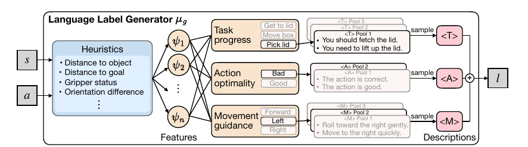
每個標籤固定三段式，設計靈感來自 reward design 原則：
實際長什麼樣（Table 5，µg 生成）：
// PEGINSERT，expert 樣本 Insert the peg into the hole. Furthermore, the action is good for the state because the peg is being pushed into the hole. Also, take a move to the bottom gently. // PEGINSERT，suboptimal 樣本 Go to the peg. Yet, the action is not right for the state, since the gripper moves away from the peg. Plus, make a move toward the right gently. Furthermore, make a move to the bottom softly.
為什麼用規則而不是直接 prompt VLM？便宜、一致、可重現——不受模型版本、prompt 模板、decoding 隨機性影響。µg 基於 LLF-Bench 客製：加上 <T><A><M> 結構化拆解（原版只說好壞、語言變異大），並把管線擴到 MAZE、BLOCKPUSH、PEGINSERT、Adroit 等原版沒有的任務。代價是需要 state 的幾何資訊來算 heuristics（論文在 Limitations 承認這是 privileged state information）。第 08 節的 ablation 會證明：現在就換成 VLM，還不行。
Step 2 — LLM-Captioner µϕ：把規則蒸餾成可微分的評論員
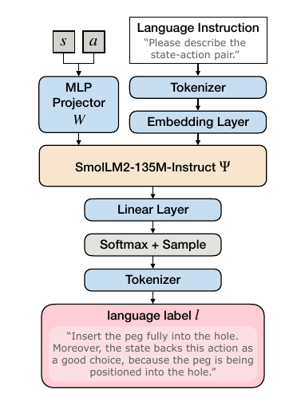
µg 是規則程式，不可微分——梯度過不去。所以把它蒸餾成 µϕ：一顆 SmolLM2-135M-Instruct 加一個 MLP projector，在標好的 D_G^lang 上用 token-level cross-entropy fine-tune（兩階段：先只練 projector、再全模型 end-to-end），然後凍結。關鍵：因為 µϕ 是在「expert＋雜牌」的完整 D_G 上訓練的，它學到的是分辨好壞行為的映射——雜牌資料的知識全部濃縮在這顆凍結的小模型裡。
Step 3 — 全家福
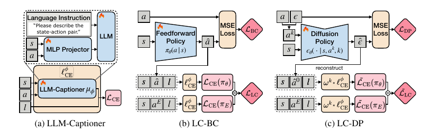
每個 (s, a) 配上一句三段式批評 → D_E^lang、D_G^lang
它現在是一個「看動作講評語」的可微分函數
BC loss 學動作本身；LC-loss 透過凍結的 µϕ 把 D_G 學到的好壞判準灌進 policy
04LC-loss：語言怎麼變成可微分的 loss
核心公式只有三行，關鍵是那個 hinge
對一句標籤 lt（token 序列長 Nt），先定義 token 平均的 cross-entropy——「這個 (s, a) 有多能解釋這句批評」：
然後在 expert 資料 D_E^lang 上，分別用 policy 的動作和 expert 的動作去解釋同一句 expert 標籤：
讀法：policy 的動作，必須讓 expert 的批評「說得通」的程度不輸 expert 本人的動作。三個設計細節都有講究：
- Clip 在 expert loss 上（hinge）：不要求 policy 把語言 loss 壓到 0——expert 自己也解釋不到 0（µϕ 有蒸餾殘差）。只要追平 expert 就停止懲罰，避免 over-regularization 把 policy 拖去過度擬合 captioner。
- stop-gradient：expert 那邊只當基準線，梯度不回流。
- µϕ 凍結：policy 訓練時 captioner 不動，它是固定的裁判，不是共同演化的對手。
最後 LC-BC 的目標就是 L_BC + λ·L_LC（L_BC 是普通的 MSE 行為克隆，Eq. 10）。這就是「語言不壓成純量」的具體意思——批評的每個 token 都在 loss 裡留有一席之地：動作偏了，「the action is good」這幾個 token 的 likelihood 就掉，梯度就會告訴 policy 往哪個方向修才能讓這句話重新成立。
05理論保證：語言差距 bound 住表現差距
Theorem A.4 — 兩個假設，一條 √ 型上界
先定義理論版的 language-critique gap（Eq. 2）：ΔLC(πθ) ＝「expert 動作解釋 expert 標籤的 log-likelihood」減「policy 動作解釋 expert 標籤的 log-likelihood」，沿軌跡折現加總。附錄 A.2 先給了一個很乾淨的等價形式——它就是逐步的 KL divergence：
然後兩個假設：
A.2 線性可實現性
- 最優 reward 下的 Q 函數對特徵 ψ(s,a) 線性：Qπr*,t = wπt⊤ψ(s,a)
- linear MDP / successor features 文獻的標準假設
- wmax := sup‖w‖₂ 有限
A.3 語言充分性
- 存在 c > 0：DKL(µ(·|s,a′) ‖ µ(·|s,a)) ≥ c‖ψ(s,a′) − ψ(s,a)‖₂²
- 白話：兩個動作在 reward 相關特徵上不同，它們引發的批評就必須聽得出差別
- 直接排除「廢話標籤」——這正是 <T><A><M> 結構化設計要滿足的性質
證明四步，都是標準工具：performance difference lemma 展開表現差距 → A.2 把 Q 差寫成 w⊤(ψ(s,aE)−ψ(s,â)) → Jensen ＋ 加權 Cauchy–Schwarz 處理折現和 → A.3 把特徵差距換成語言 KL，即 ΔLC。注意理論鏈是錨定在 µg 上的：A.3 的充分性必須對結構化生成器成立，再由 A.6 橋接到蒸餾出的 µϕ。
附錄 A.5 把定理延伸到實務版 loss：先假設蒸餾誤差有界（Assumption A.6：|log µg − log µϕ| ≤ εϕ），得到 Theorem A.8——
這個殘差項也解釋了為什麼 LC-loss 要 clip 在 expert loss 而不是 0——εϕ > 0 時，追求零就是在擬合裁判的誤差。
06接上 diffusion policy 的細節工程
DP 預測的是噪聲不是動作 — LC-loss 要先「重建」才有著力點
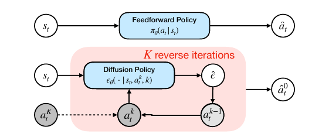
解法兩件套：
- 一步重建（Eq. 12，沿用 Kang et al. 的技巧）：從第 k 步的噪聲樣本 ak 和預測噪聲 ϵ̂ 直接反解乾淨動作 â⁰ = (ak − √(1−ᾱk)·ϵ̂)/√ᾱk，LC-loss 就評這個重建動作。
- k 相關重加權（Eq. 13–15，本文的新推導）：k 越大訊噪比越低，重建越不可靠——1/√ᾱk 這個放大係數在 k 大時會爆。所以每一步的 LC-loss 乘上 ωk = ᾱk/(1−ᾱk)，把高噪聲步的話語權壓下去。
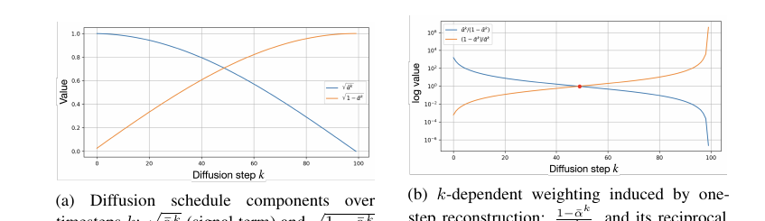
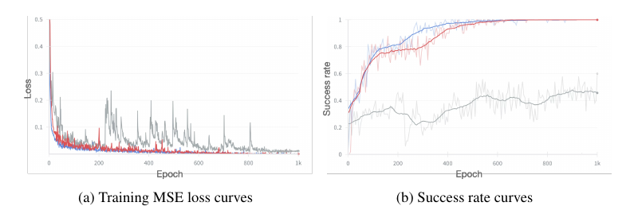
最終 LC-DP 目標：L_DP + λ·L̃_LC，其中 L̃_LC 是加了 ωk 的 hinge 版 LC-loss，結構跟 LC-BC 完全平行。
07實驗結果：四張表
8 tasks × 50 rollouts × 5 seeds（Table 2 為 3 seeds）— 數字為成功率 %
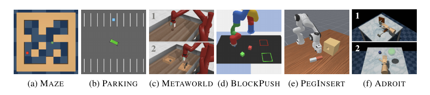
Table 1 — 對決 offline IL 基線
| 方法 | MAZE | PARKING | SWEEP | BOX-CLOSE | BLOCKPUSH | PEGINSERT | HAMMER | RELOCATE |
|---|---|---|---|---|---|---|---|---|
| Feedforward 組 | ||||||||
| BC | 79.6±4.8 | 96.4±3.0 | 76.0±14.6 | 54.8±8.4 | 34.4±3.3 | 66.4±5.4 | 96.0±3.7 | 70.8±8.3 |
| DWBC | 85.2±5.8 | 98.0±0.0 | 66.0±6.3 | 64.8±7.8 | 26.0±4.2 | 60.8±1.8 | 88.0±9.9 | 48.0±6.6 |
| DemoDICE | 78.0±3.2 | 96.8±1.1 | 68.4±10.1 | 82.0±6.3 | 3.6±2.6 | 67.2±6.1 | 96.8±7.2 | 65.2±8.1 |
| ILID | 82.4±3.6 | 93.6±1.7 | 92.4±7.3 | 69.6±15.3 | 28.4±4.1 | 59.6±2.6 | 90.4±9.1 | 80.8±6.9 |
| LC-BC-reward | 79.6±4.8 | 96.8±2.7 | 88.4±7.0 | 63.6±12.1 | 38.8±5.8 | 63.6±3.3 | 90.0±6.9 | 65.6±11.2 |
| LC-BC-classifier | 78.0±3.2 | 100.0±0.0 | 85.2±3.3 | 82.0±14.4 | 40.4±6.1 | 65.2±3.6 | 75.6±9.8 | 66.8±12.6 |
| LC-BC (ours) | 81.6±6.1 | 96.8±2.7 | 90.0±5.8 | 80.4±4.6 | 47.2±4.1 | 67.2±5.4 | 99.2±1.8 | 71.2±5.9 |
| Diffusion 組 | ||||||||
| DP | 94.4±2.2 | 96.0±0.0 | 94.0±5.7 | 64.8±5.0 | 83.6±4.8 | 53.6±1.7 | 79.2±3.0 | 67.2±24.2 |
| LPB-Offline | 93.6±2.2 | 95.6±0.9 | 93.6±7.1 | 67.2±7.8 | 78.0±4.9 | 51.6±5.0 | 74.4±3.6 | 59.6±27.2 |
| LC-DP-reward | 94.0±2.0 | 96.4±0.9 | 94.0±5.8 | 58.4±5.7 | 85.2±1.1 | 53.2±2.7 | 76.0±1.4 | 66.8±21.8 |
| LC-DP-classifier | 92.4±2.2 | 97.6±0.9 | 96.0±5.8 | 66.8±4.1 | 82.8±2.3 | 52.8±1.8 | 77.6±0.9 | 68.0±24.8 |
| LC-DP (ours) | 94.4±1.7 | 97.6±1.7 | 96.8±3.6 | 69.2±6.7 | 88.0±1.4 | 56.8±2.7 | 80.0±3.2 | 77.6±4.1 |
BLOCKPUSH：多模態任務就是純量方法的照妖鏡
解讀重點：
- 多模態是分水嶺。BLOCKPUSH 有多種合法策略，「像不像 expert」的分布匹配直接誤殺合法解——DemoDICE 從別的任務的 80+ 崩到 3.6。語言標籤只描述「進度＋好壞＋修正」，不強迫單一模式，LC-BC 34.4→47.2。
- 精度控制看 policy class。PEGINSERT 上 LC-BC 對 BC 只小勝（67.2 vs 66.4），但 LC-DP 對 DP 明顯領先（56.8 vs 53.6）——語言給的是「高層行為指引」，diffusion 的迭代去噪比 feedforward 更能把它消化成細粒度控制。
- 飽和任務沒戲唱。MAZE、PARKING 上多數方法已接近飽和，語言加不了什麼。
Table 2 — 拿掉「乾淨 expert 分割」的假設
更狠的設定：沒有分好的 D_E，只有一包混雜資料。做法：用 <A> 標籤篩「連續 N 步都是正評」的片段當偽 expert 集（N 越大越嚴格，括號內是篩出樣本中真 expert 的占比）。所有方法都用同一份篩過的資料訓練，但只有 LC 系列在訓練中利用語言標籤：
| 方法 | SWEEP | BOX-CLOSE | ||||||
|---|---|---|---|---|---|---|---|---|
| N=2 (22.7%) | N=3 (33.6%) | N=5 (51.9%) | N=10 (84.3%) | N=2 (32.9%) | N=3 (48.9%) | N=5 (68.4%) | N=10 (86.8%) | |
| Feedforward 組 | ||||||||
| BC | 53.3±8.1 | 65.3±7.0 | 72.7±3.1 | 94.7±3.1 | 50.0±4.0 | 55.3±11.0 | 87.3±4.6 | 84.7±2.3 |
| DWBC | 60.7±8.1 | 69.3±5.0 | 74.0±4.0 | 84.0±3.5 | 34.7±2.3 | 52.7±7.0 | 71.3±3.1 | 80.0±2.0 |
| DemoDICE | 66.7±5.0 | 76.7±8.3 | 87.3±3.1 | 80.7±8.3 | 65.3±15.5 | 61.3±5.0 | 87.3±5.0 | 84.0±5.3 |
| ILID | 68.7±10.1 | 86.7±8.1 | 80.7±8.3 | 95.3±8.1 | 68.0±7.2 | 63.3±6.4 | 50.7±43.9 | 88.0±2.0 |
| LC-BC-reward | 52.0±7.2 | 60.7±4.6 | 76.0±10.6 | 91.3±7.0 | 58.7±5.0 | 56.7±13.3 | 82.0±8.0 | 85.3±5.0 |
| LC-BC-classifier | 88.7±2.3 | 85.3±9.2 | 85.3±13.3 | 78.7±5.0 | 64.7±4.2 | 64.7±5.8 | 80.0±7.2 | 87.3±6.4 |
| LC-BC (ours) | 72.0±8.7 | 81.3±4.6 | 84.0±8.7 | 88.0±5.3 | 71.3±8.3 | 78.0±3.5 | 88.7±7.0 | 94.0±2.0 |
| Diffusion 組 | ||||||||
| DP | 66.0±3.5 | 70.7±1.2 | 86.0±0.0 | 100.0±0.0 | 56.0±4.0 | 91.3±1.2 | 92.0±2.0 | 95.3±2.3 |
| LPB-Offline | 47.3±2.3 | 58.0±2.0 | 73.3±8.1 | 97.3±2.3 | 54.0±5.3 | 82.0±4.0 | 86.7±6.1 | 91.3±4.6 |
| LC-DP-reward | 64.7±4.2 | 72.0±2.0 | 87.3±1.2 | 98.7±1.2 | 58.0±3.5 | 86.0±2.0 | 91.3±1.2 | 95.3±1.2 |
| LC-DP-classifier | 64.7±3.1 | 70.0±2.0 | 88.0±2.0 | 100.0±0.0 | 58.7±3.1 | 88.7±1.2 | 92.7±2.3 | 96.0±2.0 |
| LC-DP (ours) | 62.7±1.2 | 72.0±5.3 | 88.0±4.0 | 99.3±1.2 | 70.0±2.0 | 92.0±2.0 | 94.0±0.0 | 96.7±1.2 |
重點在低品質區（N=2、3，偽 expert 集裡七八成是雜牌）：BOX-CLOSE N=2 時 LC-BC 71.3 vs BC 50.0、N=3 時 78.0 vs 55.3——資料越髒，逐步的語言批評越值錢。DWBC、DemoDICE 在髒分割下明顯退化，ILID 偶爾撐住但方差爆炸（50.7±43.9）。
Table 4 — 對決 offline RL（reward 由語言轉換而來）
| 方法 | MAZE | PARKING | SWEEP | BOX-CLOSE | BLOCKPUSH | PEGINSERT | HAMMER | RELOCATE |
|---|---|---|---|---|---|---|---|---|
| CQL | 30.0±1.4 | 25.2±3.0 | 4.0±3.2 | 10.0±10.3 | 0.0±0.0 | 1.6±0.9 | 50.8±5.2 | 2.4±2.2 |
| TD3+BC | 81.2±3.0 | 93.6±0.9 | 38.8±6.7 | 56.8±10.4 | 41.2±5.8 | 58.4±3.6 | 97.6±5.4 | 41.6±7.0 |
| LC-BC (ours) | 81.6±6.1 | 96.8±2.7 | 90.0±5.8 | 80.4±4.6 | 47.2±4.1 | 67.2±5.4 | 99.2±1.8 | 71.2±5.9 |
| DT | 41.6±4.3 | 39.2±2.3 | 59.2±7.7 | 42.0±5.5 | 2.4±0.9 | 40.4±3.3 | 61.6±12.8 | 11.6±2.6 |
| EDP | 91.2±1.1 | 96.8±1.1 | 98.4±2.6 | 71.6±5.2 | 82.0±6.8 | 56.0±2.4 | 83.6±3.3 | 44.0±5.1 |
| LC-DP (ours) | 94.4±1.7 | 97.6±1.7 | 96.8±3.6 | 69.2±6.7 | 88.0±1.4 | 56.8±2.7 | 80.0±3.2 | 77.6±4.1 |
公平起見，offline RL 基線用的 reward 就是從同一份語言標籤轉換來的（按 Cao et al. 的方法）——所以這張表直接量化了「語言 → 純量」這個壓縮步驟本身丟掉多少資訊。CQL 幾乎全面崩盤、DT 在多模態任務失能；LC-BC 在 feedforward 組八戰全勝，LC-DP 在 diffusion 組五勝。RELOCATE 上 LC-DP 77.6 vs EDP 44.0，差了 33.6 分。
08Ablation：拆解語言標籤，順便打臉 VLM
Table 3（BOX-CLOSE 上）— 結構、語意、來源，一項一項拆
三個組件各值多少
| <T> 進度 | <A> 好壞 | <M> 修正 | LC-BC | LC-DP |
|---|---|---|---|---|
| ✗ | ✗ | ✓ | 67.6±8.3 | 56.0±5.7 |
| ✗ | ✓ | ✗ | 69.6±10.5 | 65.2±8.1 |
| ✓ | ✗ | ✗ | 51.6±4.3 | 66.4±7.1 |
| ✓ | ✓ | ✗ | 65.6±9.5 | 62.4±15.5 |
| ✓ | ✗ | ✓ | 79.6±10.8 | 62.0±9.6 |
| ✗ | ✓ | ✓ | 74.4±15.3 | 62.8±8.8 |
| ✓ | ✓ | ✓ | 80.4±4.6 | 69.2±6.7 |
三件全上最好，但拆開看有意思：LC-BC 靠 <A>、<M>（跟動作選擇直接相關），單獨 <T> 反而只有 51.6；LC-DP 卻光靠 <T> 就有 66.4——diffusion 吃階段級訊號就夠，feedforward 需要動作級指令。同一份監督，不同 policy class 消化方式完全不同。
那直接用 VLM 生標籤呢？
把 µg 換成 o4-mini 看圖說話（prompt 見下方 Fig 4），結果：
| 標籤來源 | Captioner backbone | LC-BC | LC-DP |
|---|---|---|---|
| o4-mini | SmolLM2-135M | 55.2±15.1 | 63.6±6.1 |
| o4-mini | SmolLM2-360M | 61.6±14.6 | 71.2±12.1 |
| o4-mini（改寫精簡） | SmolLM2-135M | 63.4±10.5 | 62.4±7.1 |
| o4-mini（改寫成 µg 風格） | SmolLM2-135M | 56.4±13.4 | 62.4±12.8 |
| µg-shuffled（格式對、語意亂） | SmolLM2-135M | 55.6±13.5 | 62.4±11.3 |
| µg-verbose（語意對、文風囉嗦） | SmolLM2-135M | 68.0±12.4 | 62.0±10.7 |
| µg（本文） | SmolLM2-135M | 80.4±4.6 | 69.2±6.7 |
兩組對照實驗把「為什麼 VLM 標籤不行」拆得很乾淨：
- µg-shuffled（格式完好、語意隨機互換）掉到 55.6 ≈ o4-mini 原生的 55.2 —— 對 feedforward policy 而言，o4-mini 標籤的有效資訊量約等於亂數。語意才是本體。
- 把 o4-mini 改寫成 µg 風格反而更糟（56.4）——表面模仿結構沒用，錯的內容穿上對的格式還是錯。
- µg-verbose（語意對、文風囉嗦）對 LC-BC 仍有 68.0——豐富文風傷一點，但語意準確撐住大盤；對 LC-DP 卻沒加分——diffusion 更在意標籤分布好不好被 captioner 建模。
- 唯一的例外亮點：360M captioner + o4-mini 標籤讓 LC-DP 衝到 71.2，超過 µg——captioner 容量夠大時，VLM 標籤的多樣性反而變成資產。VLM 路線沒死，只是還沒到。
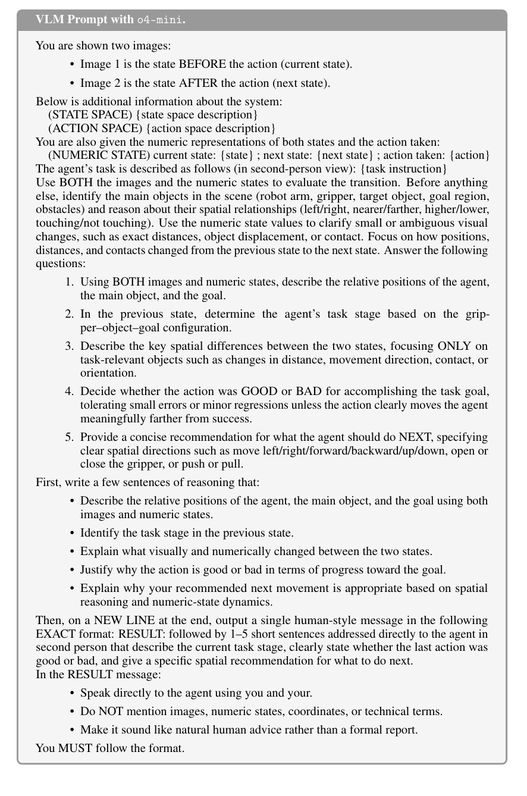
λ 敏感度
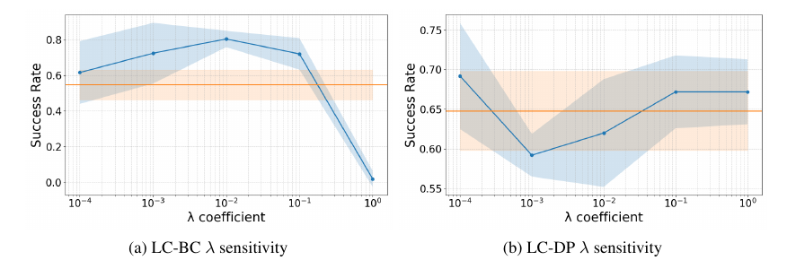
Captioner backbone：越大越好？正好相反
| Backbone | Finetune 方式 | LC-BC | LC-DP |
|---|---|---|---|
| SmolLM2-135M-Instruct | 全模型 | 80.4±4.6 | 69.2±6.7 |
| SmolLM2-135M-Instruct | 只 projector | 62.0±14.3 | 66.4±7.1 |
| SmolLM2-135M-Instruct | 不微調（現成） | 53.6±8.2 | 60.0±15.0 |
| SmolLM2-360M-Instruct | 全模型 | 55.2±6.6 | 66.0±4.9 |
| Qwen2-0.5B-Instruct | 全模型 | 67.2±17.1 | 62.4±6.1 |
| Mistral-7B-Instruct-v0.3 | 只 projector | 61.2±7.9 | 58.8±5.4 |
Table 13（µg 標籤下）的結論很反直覺：adaptation 遠比 scale 重要。135M 全模型微調最好（80.4）；同一顆模型只練 projector 掉到 62.0、完全不微調掉到 53.6；而 7B 的 Mistral（只 projector）61.2 補不回這個差距。更妙的是放大 backbone 反而變差——360M 只有 55.2。前面 Table 3 那個「360M 讓 o4-mini 標籤反超」的故事要合起來讀：µg 的標籤簡潔一致，小模型全微調就吃得下；VLM 的標籤囉嗦多樣，才需要大 captioner 去建模。captioner 容量要配標籤分布的複雜度，不是越大越好。
Table 14 — 沒見過爛動作的評論員，比沒有評論員更糟
把 µϕ 的訓練資料從 D_G^lang（expert＋雜牌）換成只有 D_E^lang（純 expert）：LC-BC 80.4→59.2、LC-DP 69.2→56.0——後者低於完全不用語言的 DP（64.8）。這是整篇最重要的機制證據：雜牌資料的價值只透過 captioner 這條通道進入系統，而 captioner 必須靠好壞對照才能學到有判別力的映射。沒有對照的 captioner 給出的批評千篇一律，LC-loss 變成純噪音。
09質性結果：看 loss 逐步抓出偏差
Figures 11–12 — LC-loss 是「會指出哪一步開始歪」的顯微鏡
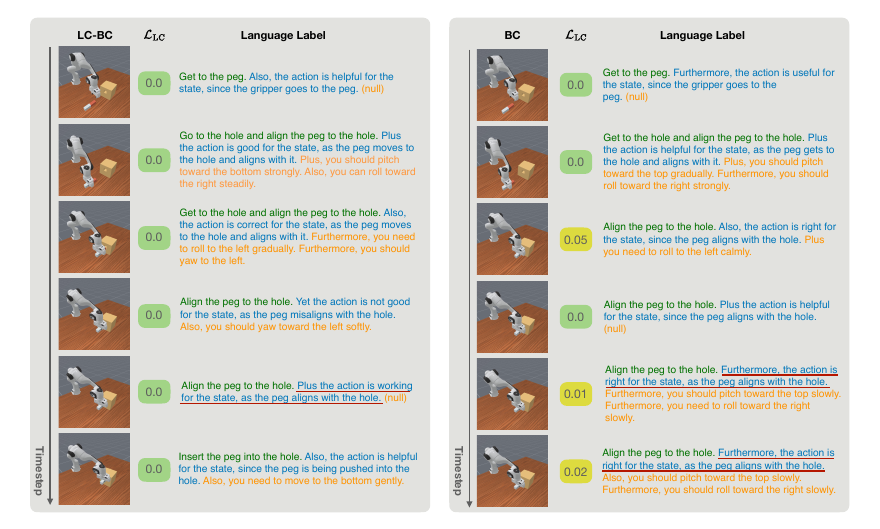
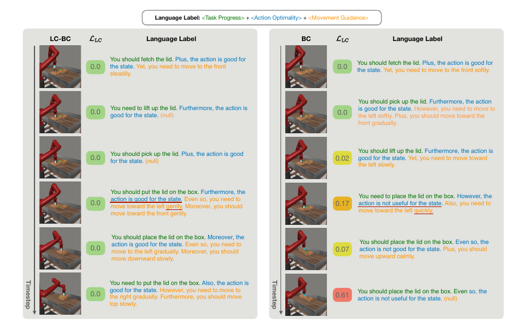
10附錄深讀：演算法、資料、超參數
Appendix B–I 的可復現細節
Algorithm 1 / 2 — 完整流程
// Algorithm 1: LC-BC（Algorithm 2 的 LC-DP 平行，差異標注於後） Input: D_E, D_G, λ, π_θ, µ_g, µ_ϕ 1. 用 µ_g 標注 D_E → D_E^lang；標注 D_G → D_G^lang 2. 初始化 µ_ϕ = 預訓練 LLM Ψ + projector W 3. Stage 1：凍結 Ψ，只用 ℓ_CE 更新 W // 先讓 projector 學會「打進 hidden space」 4. Stage 2：解凍，W 和 Ψ 一起 end-to-end 微調 // 然後全模型蒸餾 µ_g 5. 凍結 µ_ϕ；隨機初始化 π_θ 6. for each policy iteration: 取 (s, a^E, l) ∼ D_E^lang；â ∼ π_θ(·|s) 算 L_BC（MSE）＋ L_LC（Eq. 9，經 µ_ϕ） 更新 π_θ ← L_BC + λ·L_LC // LC-DP 差異：抽 diffusion step k、加噪得 a^k、預測 ϵ̂、 // 一步重建 â⁰（Eq. 12）、LC-loss 乘 ω^k 重加權（Eq. 13–15）
資料集組成（Table 7–8）— 注意極端不對稱
| Task | Expert 軌跡數 | Expert steps | General steps | State / Action 維度 | Expert 來源 |
|---|---|---|---|---|---|
| MAZE | 200 | 26,037 | 153,177 | 6 / 2 | D4RL controller |
| PARKING | 500 | 10,693 | 73,604 | 18 / 2 | SAC policy |
| SWEEP | 500 | 5,035 | 73,485 | 9 / 4 | MetaWorld controller |
| BOX-CLOSE | 500 | 4,214 | 76,031 | 9 / 4 | MetaWorld controller |
| BLOCKPUSH | 500 | 37,994 | 301,876 | 16 / 2 | default controller |
| PEGINSERT | 500 | 18,589 | 246,576 | 43 / 8 | PPO policy |
| HAMMER | 10 | 439 | 24,752 | 46 / 26 | DAPG policy |
| RELOCATE | 20 | 1,118 | 30,136 | 39 / 30 | DAPG policy |
HAMMER 只有 10 條 expert 軌跡、RELOCATE 只有 20 條——偏偏是狀態 39–46 維、動作 26–30 維的靈巧手任務。LC-BC 在 HAMMER 拿 99.2、LC-DP 在 RELOCATE 拿 77.6（EDP 只有 44.0），等於在「expert 最稀缺 × 維度最高」的角落給出了最大優勢。
關鍵實作事實
- Captioner backbone：SmolLM2-135M-Instruct（主實驗），(s, a) 經 MLP projector 壓成一顆 token 進 transformer。
- 兩階段微調超參數：projector 先練（lr 1e-4、100 epochs、batch 128，PEGINSERT 為 64），再全模型 10 epochs（lr 逐任務 1e-5～1e-4）；policy 訓 1001 epochs。整套建構在 Diffusion Policy codebase 上。
- λ 實際值：LC-BC 幾乎全任務 10⁻²（BLOCKPUSH 10⁻⁴）；LC-DP 逐任務調（10⁻⁵～5×10⁻²）。因 LLM 前向的記憶體成本，policy 端用小 batch（16，HAMMER 的 LC-BC 為 32）＋大 gradient accumulation（4–16）。
- µg 的家世：基於 LLF-Bench 的生成管線客製——加 <T><A><M> 結構、擴展到 LLF-Bench 沒有的任務（MAZE、BLOCKPUSH、PEGINSERT、Adroit）。
- 評測協定：Table 1/3/4 為 50 rollouts × 5 seeds；Table 2 為 50 rollouts × 3 seeds。成功判準很硬：HAMMER 要整根釘子打進板子、PEGINSERT 要求插入誤差 0.015m 內。
- 算力：12 台工作站，從 RTX 3080/3090 到 A6000、H100 ×2 都有——學術等級，不是大廠叢集。
- 語言只在訓練期存在：推論時 πθ 是普通的 MLP／UNet，跟 BC／DP 部署成本完全相同。
LC-*-reward：把語言標籤壓成純量 reward、訓一個 reward model Rϕ、套 LC-loss 式的 hinge 目標——連「在 D_G 上訓練→凍結→輔助監督」的兩階段管線都跟本法一模一樣，唯一變因是監督格式。LC-*-classifier：把 <T><A><M> 各自變成類別標籤、multi-head cross-entropy——保留多維結構，但丟掉兩樣東西（H.2 明列）：autoregressive LM 捕捉的標籤間相依性，以及 pretrained token embedding 帶來的語意 grounding。結果（Table 1）：語言版全面壓過 reward 版；classifier 版偶爾在 feedforward 上占優（語言的詞彙噪音對 MLP 有害），但 diffusion 上語言版穩贏——去噪過程天然抗噪，吃得下語言的全部表達力。
11侷限
Appendix L — 作者自己列的，都很實在
12我的重點筆記
從 harness 工程視角讀這篇
- 監督訊號別做有損壓縮。整篇論文一句話：scalar 是語言的 lossy compression，壓掉的正是「錯在哪、怎麼修」。Table 4 的設計特別漂亮——offline RL 基線用的 reward 就是同一份語言轉的，等於直接量測壓縮損失：RELOCATE 上差 33.6 分。
- 結構贏過風格，語意贏過結構。µg-shuffled（格式對、語意亂）≈ 隨機；o4-mini 改寫成 µg 風格（風格對、內容錯）更糟；µg-verbose（語意對、文風囉嗦）能撐住。設計監督訊號時，先保語意正確，再談格式一致，文風最不重要。
- 135M 的 LLM 當 loss function 用。不是每個「LLM in the loop」都要大模型——凍結的小模型當可微分裁判，訓練時給梯度、推論時直接扔掉。便宜、穩定、零部署成本。
- Hinge at expert 是個好習慣。不要求輔助 loss 歸零，只要求「不輸 expert 基準」——因為裁判本身有蒸餾殘差，追求零就是過擬合裁判的偏見。理論（A.5 的殘差項）和實作（stop-gradient + clip）在這裡完全一致。
- Policy class 決定監督怎麼餵。同一份標籤：feedforward 要語意準的動作級指令（<A><M>），diffusion 吃階段級訊號（<T>）就夠、還抗詞彙噪音。換 policy 架構時，supervision 設計要跟著換——這是 Table 3 左右兩半合起來教的事。
- VLM 自動標註的現況座標。粗粒度判斷（進度 51.8%、好壞 46.1%）勉強及格邊緣，精細空間修正（18.8%）完全不行。captioner 放大到 360M 後 VLM 標籤能讓 LC-DP 反超規則版（71.2 vs 69.2），但注意 Table 13：用規則標籤時放大 captioner 反而變差（360M 只有 55.2）——容量要配標籤分布的複雜度。「規則產生器＋小 captioner 全微調」是今天的解，「強 VLM＋大 captioner」是明天的賭注。
- 對照組資料是裁判的命。Table 14：captioner 只看 expert 資料訓練，LC-DP 掉到比不用語言還糟（56.0 vs 64.8）。要一個模型當判別性的裁判，就必須讓它見過反例——只餵好樣本訓出來的評審，會把一切都評成好。